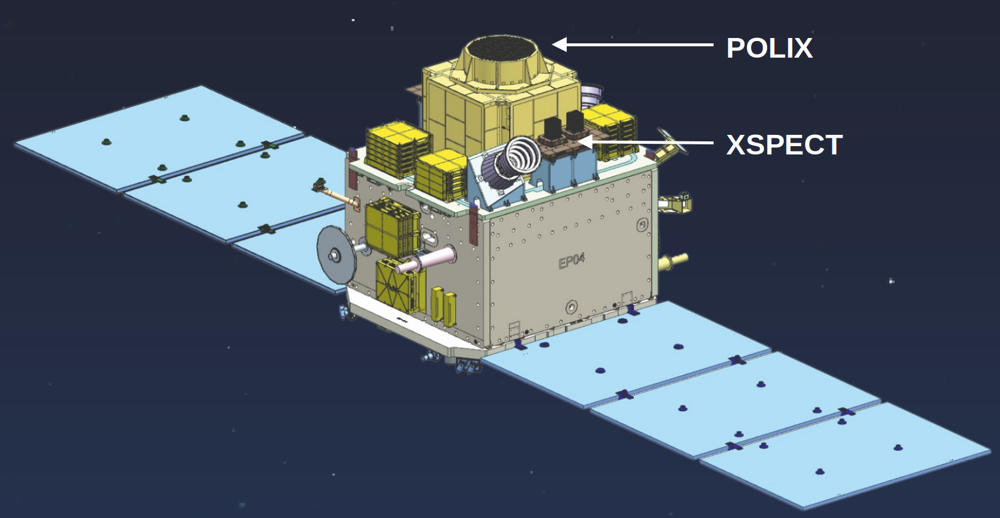
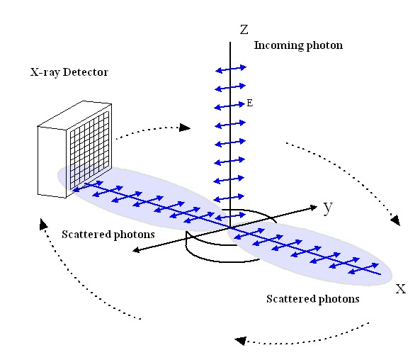
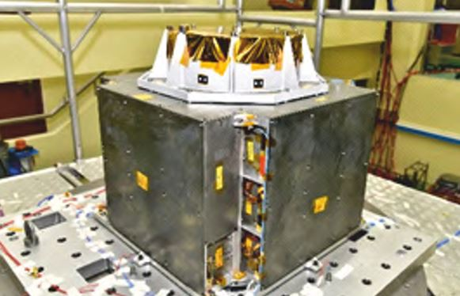
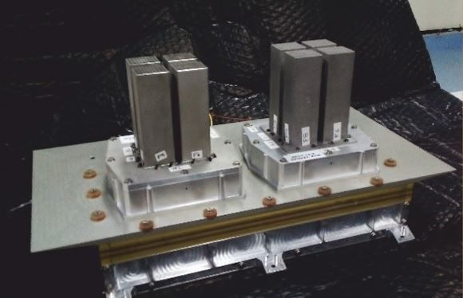

XpoSat: India's venture into the new frontier of X-ray astronomy
The Indian Space Research Organisation (ISRO) commenced the new year with the launch of the X-Ray Polarimeter Satellite (XPoSat). X-ray polarization measurement is an emerging technique in X-ray astronomy and holds immense potential for enhancing our understanding of the extreme universe in X-rays.
Introduction
Since time immemorial, the night sky has captivated the imagination of humankind. From the ancients who traced constellations across the heavens to modern-day astronomers probing the depths of space, humans have always gazed up at the night sky and wondered what secrets it held. Curiosity has propelled mankind toward innovation, and as technology has progressed, humans have constructed bigger and ever more sensitive instruments to explore the heavens across the entire electromagnetic spectrum, from radio waves to the most energetic gamma rays.
X-ray Astronomy
Extremely energetic objects, such as supernova remnants, hot gases in galaxy clusters, black holes, and neutron stars, emit high-energy radiations like X-rays and gamma rays. Unlike visible light or radio waves, X-rays from celestial sources do not reach Earth’s surface due to atmospheric attenuations. Thus, humans engineered space telescopes, placed beyond our planet’s protective shield, offering a view of the high-energy Universe. Since the advent of the first X-ray instruments in the 1960s, the temporal variability and spectroscopic properties of various cosmic X-ray sources have been extensively studied. Temporal variability tells us about the behavior of a source on different time scales, whereas spectroscopy reveals its relative brightness in different energies/wavelengths - both these parameters contain a wealth of information about the source. India’s first dedicated astronomy satellite, AstroSat, has significantly contributed to advancing this endeavor. The data from these telescopes have notably enhanced our understanding of these extreme cosmic objects. However, we have reached a point where our timing and spectroscopy abilities alone cannot resolve some of the degeneracies within our theoretical understanding.
X-ray polarimetry
The emission mechanism from various astronomical sources such as black holes, neutron stars, active galactic nuclei, etc. originate from complex physical processes and are challenging to understand. X-ray polarization offers an additional dimension to our observable parameter space through the polarization degree, which measures the strength of polarization, and the polarization angle, representing the orientation of the electric field vector within the X-ray radiation.. Polarization information is intricately linked to the geometry of the cosmic system, serving as a diagnostic tool to study emission mechanisms, accretion flows, magnetic field distribution, etc. within these cosmic sources. The polarimetric observations along with spectroscopic measurements are expected to break the degeneracy of various theoretical models of astronomical emission processes.
XPoSat
India unveiled a new frontier in high-energy astrophysics with the launch of its first X-Ray Polarimeter Satellite (XPoSat) on January 1st, 2024. XPoSat was launched into a low Earth orbit of 650 km altitude and 6 degrees inclination by ISRO’s workhorse - the PSLV rocket. It is the first-ever mission designed to measure the X-ray polarization of medium energy X-rays (8-30 keV) with an X-ray Polarimeter (POLIX) instrument. The X-ray SPECtroscopy and Timing (XSPECT) instrument onboard provides simultaneous X-ray spectroscopic measurements in the 0.8-15 keV energy range. The XPoSat aims to study about 50 bright X-ray sources, including pulsars, black hole X-ray binaries, active galactic nuclei, etc.

Figure 01: XPoSat (Credits: ISRO)
POLIX
POLIX , developed by Raman Research Institute (Bengaluru), is the principal scientific payload onboard XPoSat. When X-ray photons interact with matter, part of them scatter in various directions. In the direction perpendicular to the incident photons, the scattering for polarized X-ray photons is non-uniform, unlike for unpolarized X-ray photons. This phenomenon, called Thomson scattering, is a dominant photon-matter interaction within the POLIX energy range. (See Figure 02).

Figure 02: Anisotropic Thomson Scattering of polarized X-ray photons (Credits: RRI Website)
The field of view for incoming X-ray photons is limited to 3 degrees by 3 degrees using a collimator. The collimated X-ray photons scatter from a low atomic mass scatterer (Beryllium) and are subsequently detected in X-ray proportional counters surrounding the scatterer. The charge generated on the anode wire due to incident X-ray photons is measured at both ends of the anode wire. The closer the incident photon is to a particular end of the anode wire, the more charge is collected at that end. Thus, the ratio of the charge pulses collected at both ends of the anode wire provides information about the position on the anode wire where the photon was incident. The polarization information of incoming X-ray photons is estimated by measuring the distribution of the scattered photons in the plane perpendicular to the incident photons. POLIX, along with the rest of the XpoSat satellite, will be spun around the viewing axis at 2 RPM. Due to spinning, each anode wire can potentially act as an individual polarimeter by itself. NASA’s Imaging X-ray Polarimetry Explorer (IXPE) has the capability to measure the polarization of X-ray photons in the 2-8 keV range, which complements the POLIX energy range. Both instruments together will enhance our overall understanding of X-ray sources across broader energy ranges.

Figure 03: POLIX Payload (Credits: ISRO)
XSPECT
XSPECT instrument, developed by the Space Astronomy Group (SAG) at U. R. Rao Satellite Center (Bengaluru), is a soft X-ray spectrometer with good spectral resolution and timing capabilities, which can provide valuable insights into the nature of cosmic X-ray sources. XSPECT aims to study the X-ray emission from enigmatic sources such as black hole binaries, X-ray pulsars, magnetars, active galactic nuclei, and supernova remnants. XSPECT will probe the accretion dynamics, emission mechanisms, and evolution of X-ray spectral states.
XSPECT is based on Swept Charge Devices (SCDs), which is, loosely speaking, a non-imaging counterpart of the well-known CCDs, but allows for a much faster readout and has less stringent cooling requirements compared to CCDs. SCDs have been employed in the CLASS instrument on-board Chandrayaan-2 Orbiter, also developed by SAG, and have been studying the lunar surface for the past 4 years. Even though more sensitive X-ray spectrometers have been flown before, the nature of XSPECT detectors as well as the XPoSat mission concept provides some unique advantages. Due to faster readout, XSPECT can observe much brighter sources such as Sco X-1, which are otherwise difficult to observe with previously flown imaging spectrometers due to pile-up effects. Moreover, polarization detection, being an extremely photon-hungry technique, requires long ‘stare’ durations for every source. Since the field-of-view of XSPECT is co-aligned with that of POLIX, this allows XSPECT to carry out long-term spectral and temporal variability studies of the sources, which is also a valuable input to augment the polarization studies.

Figure 04: XSPECT Payload (Credits: ISRO)
XPoSat would serve as the first space-based observatory to perform X-ray spectro-polarimetry (simultaneous spectroscopy and polarimetry) from bright cosmic sources. X-ray polarization measurements, along with timing and spectroscopy-based observations, hold the potential to significantly improve and enrich our understanding of the physics of extreme celestial sources.
Related articles
- Aditya-L1: India's Array of Instruments on a Journey Closer to the Sun, Continuing a Legacy of Space Excellence
- Chandrayaan-3 : A 14 day lunar cruise
- India’s expanding Cosmology community